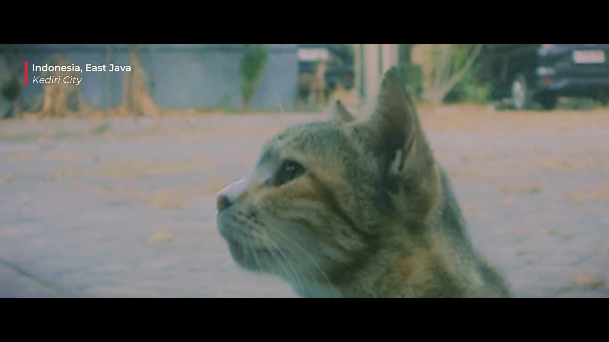

35MM DIGICAMKEDIRI // 2026
WATCH REEL · 0:23
01 // REEL
KEDIRI · EAST JAVA
A Place Called Home
“Some places don't need to be remembered. They simply remain, waiting for you to come home.”
A quiet corner of home — where the air feels softer, the trees grow freely, and time somehow moves a little slower. Shot on an old Sony DSC-W310 digicam, because some places simply don't need 4K.
OPTICS
Sony 4x Optical Lens
TEXTURE
Digicam Sensor · 24fps